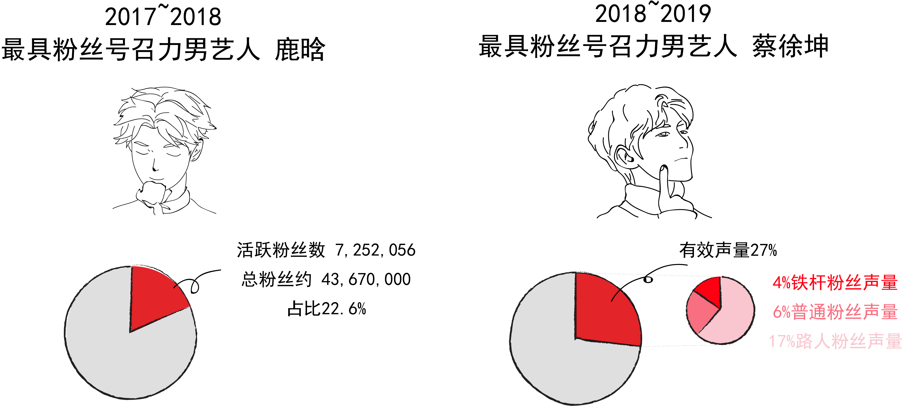
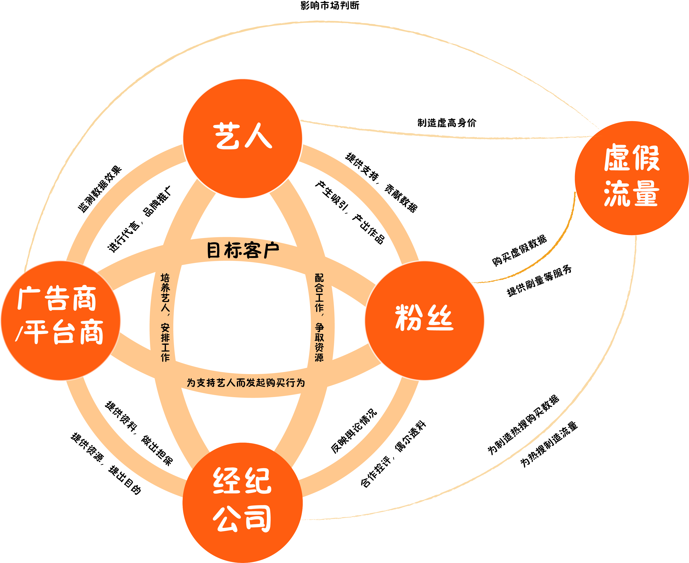

From Zero to One, From One to Infinity.
爱他，就为他买数据？
偶像艺人微博粉丝数量多，转发量就高，似乎是不争的事实。拥有6000万微博粉丝的鹿晗，去年爆红出道就有2000万粉丝的蔡徐坤，他们支撑起百万甚至千万级的微博流量似乎也在情理之中，不足为奇。
然而，艾漫数据在“中国大数据文娱发布盛典”发布——这样的粉丝数包含75%左右的“虚假数据”。
艾漫数据工作人员表示，不是所有的真实粉丝都会每日在微博上与艺人进行转发互动， 艾漫数据测算体系将当日在微博上提及艺人的网民称为“活跃粉丝”， 该指标剔除了水军。在他们给出的榜单中，蔡徐坤日活活跃粉丝量在15万左右。
若按照每日约有15w人在微博上与蔡徐坤发生互动来计算，即便他们都互动同一条微博，也需666天才可达成1亿转发。而根据央视报道，蔡徐坤的那条微博破亿，仅仅用了11天。
这样的破亿过程是如何产生的呢？ 通过调查，我们逐渐发现了一个在不同“爱豆”之间不断复制的刷“流量”模式。流量不会凭空而生，天文数字的转发量由无数个“小号”堆砌而成，这些为刷量而创造的“小号”，就构成了上文中“虚假粉丝”的主体。而每一次小号转发背后，都隐藏着“造假产业链”中的某一位操纵者。各个节点相互串联，一张流量经济的复杂网络便形成了。 (下图是调查研究得出的流量造假利益图)
通过微博搜索就可以发现，几乎每一位近年来较受欢迎的艺人都会拥有自己的“数据组”、“打投组”、“后援会”。
“一天必须打够800条”。某影视剧女演员的粉丝小罗介绍道，粉丝在加入“数据组”后每天会有一定的任务量。为此，她会准备一批小号，从1开始数数，变换评论内容。
而当艺人准备发布与代言或作品相关的信息时，其团队会将消息透露给“后援会”，以便及时进行安排。“后援会平时会在粉丝里慕色有能力的、可信任的‘大粉’，吸纳进来、透一些公司的料。”
诸如此类的方法早已不再新奇，而“做数据”已经成为粉丝群体中的一种特定职能。在艾曼数据与微博共同发布的《2018粉丝白皮书》显示，84.1%的粉丝曾经参加过“数据组”的活动，是最常见的粉丝行为。
数据组
反黑组
网宣组
其他
控评、反黑、宣发……这些在“饭圈”行为几乎全部离不开数据的支撑。“我们会提前准备好一些文案和图片，等到热搜出来、刷到相关的帖子，第一时间放进去，再号召其他粉丝一起创造热度。个别处理不了的情况会转交给工作室。”小巫钟爱的艺人在怀孕期间曾经招致大量关注与质疑，艺人生子当日，微博话题沸腾、系统瘫痪，在旅游途中的小巫则中断了游玩计划，坐在游乐园的角落里，举着手机开始控评。
然而，这种人工手动的“控评”操作只是制造流量的环节之一，这幕制造流量泡沫的大戏，还有另一个参与主体——水军。
小郭曾在一家业内知名的广告公司的明星组担任实习生，日常工作是根据客户的具体需求为客户的品牌推广活动推荐合适的明星。他向我们透露，无论是粉丝，还是明星背后的经济公司，都会通过水军来人为的刷高明星微博的转评赞数。而专门负责刷高微博转评赞数的“水军”，在业内往往被称为“微博数据维护”。
你愿意为爱豆花多少钱？又能“做出”什么样的数据？试试“水军计算器”（注：根据2019年5月微博手机的“买转买赞”价目表生成）
帮你计算流量背后价值

批量购买小号之后，粉丝还需要支付一定金额将账号绑定到特定的app中，随后复制艺人的微博链接，对转发的时间间隔、具体数量进行设置。“有些广告里说‘真人粉丝真实转发’，但有人试过、被骗了”，小罗介绍道不同明星的粉丝之间经常互相推荐靠谱的刷量业务经营者，但即便如此，在用假账号批量转发时，会出现“死号”的状况，“你设置了转发15次，但第十次就卡住了，这种情况很常见，而且一下子上百个（出问题），钱就白花了。”
最多的一次，小罗买了一千个小号，加上绑定等各项费用，她单次打榜的花费超过了1000元。而无论是做数据，还是作为“大粉”助力明星的宣发推广，都不会得到任何实质上的回报，“除了工作室会提前透露一下行程，其余的纯粹是为爱发电。”
鹿晗在2012年9月10日转发自曼彻斯特联队球迷俱乐部的微博曾因获得了1.3千万条评论，创造了最多评论的博文的吉尼斯世界纪录，这一纪录在15年被他的粉丝以 1.002亿条评论再次打破。如今，当他的粉丝重新回忆时，提到当时恰逢七夕，于是粉丝想用“1314万”的评论数据给他一个礼物。“当时他还归韩国公司，没有考虑商业价值，但知道这样做会有利于他的国民度和今后的发展。”
小罗喜欢的女演员在近年来凭借几部影视作品获得了较好的知名度，前段时间，她的爱豆承接了一项护肤品代言，当晚的广告微博转发量未过万，“广告商的宣发就直接跟我们吐槽说——数据不好”。小罗意识到，即使是知名度达到要求，品牌方在寻找代言时也会参考艺人的微博转发情况。
“对用流量衡量艺人的方法，我们只是规则的适应者，平台制定的规则、那么多榜单，还有什么‘热转前几有福利’搞这种活动，有时让我觉得挺讽刺”，蔡徐坤的一位粉丝说，“我们无法改变规则，只能去适应”。
“反正是一种别人家都有，我们家也必须得有的感觉。”
2月23日，央视新闻《‘惊人’数据的秘密》专题对已沸沸扬扬传了许久的“流量明星数据造假”进行报道，矛头直指流量明星锁场、刷榜、买粉丝。
是谁在获益？
到底是什么原因，在推动着粉丝不断刷高“爱豆”的流量数据呢？为这一整个流量造假产业链提供源动力的，恐怕不只是粉丝的“为爱发电”。 正如小罗向我们说的：当明星发布的广告微博数据不佳时，广告方会向粉丝施压。微博数据不佳将影响到爱豆后续与商家的合作机会，在粉丝看来，在这个所谓“注意力经济”的时代，爱豆的利益和发展前景与社交平台的流量密不可分，其影响程度甚至超过了艺人自身的作品表现。
这一点在艾漫数据2018年艺人商业价值指数排行榜中top50艺人的专业指数、流量指数、与代言指数的分布情况中体现出来。其中，艺人的代言指数（艺人一定时间内的代言评分，由代言的数量，质量，效果等加权计算得出），和衡量艺人社交平台讨论热度的热度指数呈显著正相关关系。而艺人的代言指数则和艺人的专业指数并无相关性。专业指数，则是由艺人参与作品的市场表现，评价口碑等计算得出。
而第三方数据监测机构ADMater发布的《2018年代言人营销指数排行榜》中也指出，相比于作品曝光，社交平台的讨论度更有利于助力品牌。某广告公司的Digital组工作人员向我们道出了其中的逻辑：这符合品牌在社交平台推广时的需求。目前，品牌在微博上与明星进行推广合作，多会让明星在自己的微博上发布品牌广告，同时会建立“超级话题”汇总品牌推广相关信息。粉丝通过转发明星微博，评论超级话题，可能令品牌推广话题的阅读量动辄能达到上千万破亿，商家的宣传效果与明星粉丝的转发力度捆绑在了一起， 偶像流量数据高了，自然有更多与商家合作的机会。
中国传媒大学经管学部文化产业管理系副主任韩润磊向我们介绍到，演艺明星有其市场属性，以自己的名气和明星效应来带动产品营销，本就是明星市场属性的正常体现。但以鹿晗、吴亦凡等小鲜肉艺人的横空出世为标志，目前明星商业价值的形成模式和之前相比有了非常大的不同。
韩老师介绍，曾经，明星想要形成巨大的号召力，尽而获得商业合作的机会和其他演艺资源，需要有一个脍炙人口，红透市场的作品。那时传播渠道单一，没有像微博这样可以直接发布艺人相关信息，让粉丝与艺人互动的平台。艺人想要让大众了解自己的信息，只能借由电台，电视节目等方式。而只有先有了影视音乐作品，才有登上大众媒体进行推广宣传进而获得大量曝光的机会。商家想要与艺人进行合作，也只能从艺人的专辑销量、影视作品的数量等指标来判断艺人的号召力。这可看作是传统艺人经纪的模式。
而目前的流量艺人，则凭借粉丝的狂热追捧直接获得了商业资源。这是偶像产业的运营逻辑。这种产业逻辑下，演艺公司通过对旗下艺人训练，包装，并且通过综艺节目，歌曲的推广，收获一批忠诚的粉丝。而粉丝的购买热情以及粉丝可以为偶像带来的传播力度，则是流量艺人价值的核心体现。大多数人对吴亦凡，蔡徐坤等人有什么作品并不了解。但是在粉丝和演艺公司的流量助力下，他们在微博等社交平台上无处不在，注意力的集聚慢慢让他们从饭圈走向主流。
流量艺人在这种偶像产业逻辑下，霸占了大银幕小荧屏。吴亦凡在2014年回国后，在没有任何影视表演经验的情况下以一番男主的身份出演了徐静蕾导演的《有一个地方只有我们知道》，并在随后获得了与徐克、吕克贝松等大导演合作的机会。而王俊凯、鹿晗同样参演了张艺谋导演的《长城》。
而对于广告主来说，资源投放时艺人超高的社交媒体流量可以为广告带来更好的传播数据以及更佳的购买转化率，这正是广告主的直接诉求。当前粉丝对以广告转发量和“带货能力”的追求，无疑是广告商愿意看到的趋势。
“以流量换取资源是一种正常的市场行为，无可厚非。但流量造假却是一种不正当竞争的行为”，韩老师说。不正当竞争的链条渐渐引发了各方的困境。
高额流量成为艺人获取更多商业代言与演艺资源的敲门砖，在这个动机的驱使下，粉丝们逐渐认为，“别人家都有，我们家也必须得有”，是否刷高流量，成为了一个“囚徒困境”式的博弈。
而在市场的层面上，流量的水分也正越来越引发广告主的担忧。目前，无效流量的问题正为广告圈带来巨额损失，越来越受到广告圈的重视。2017年美国在数字营销领域投入超过830亿美元，其中，无效流量带来的经济损失将超过65亿美元。而根据ADMaster的测算，2018上半年中国数字营销无效流量占比为28%。面对这样的现状，联合利华公司的总裁多次呼吁建立KOL流量监测机制，并表示“联合利华将永久不与买粉、数据造假的社交媒体红人合作，并优先考虑与打击数据欺诈行为的平台合作。”
随着央视在新闻中曝光小鲜肉微博数据造假的问题，流量造假这一现象在国内正受到愈来愈广泛的关注。新浪微博随后将转发、评论计数显示上限设为100w，过亿转发，恐怕将彻底成为历史。流量中的“水分”正逐渐被阳光晒干。但流量“脱水”后我们发现，蔡徐坤，朱一龙等人的有效声量仍然在所有艺人中位居第一。去除造假的流量，粉丝经济的产业链依然完整，艺人的价值核心没有被动摇。
造假的流量，是粉丝自娱自乐，演员公司自导自演的喧哗与骚动，真正决定爱豆价值的，本应是脱水后的“干货”。